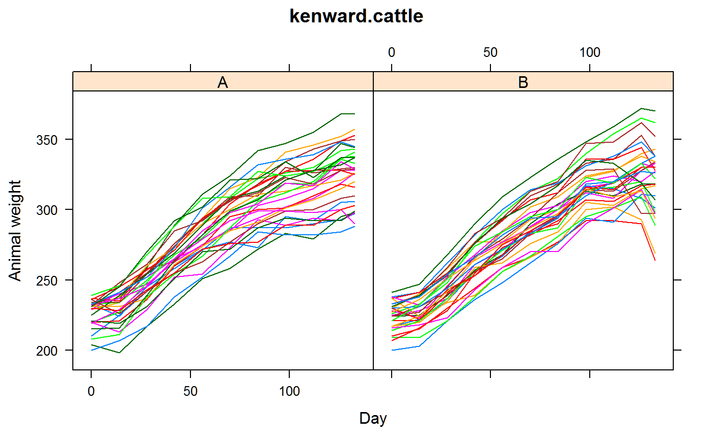
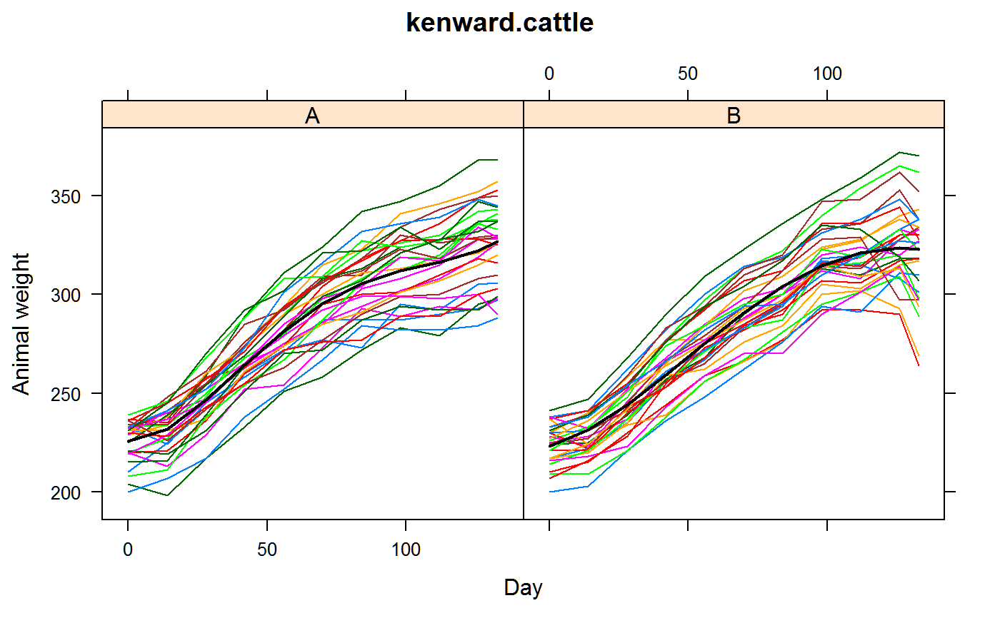
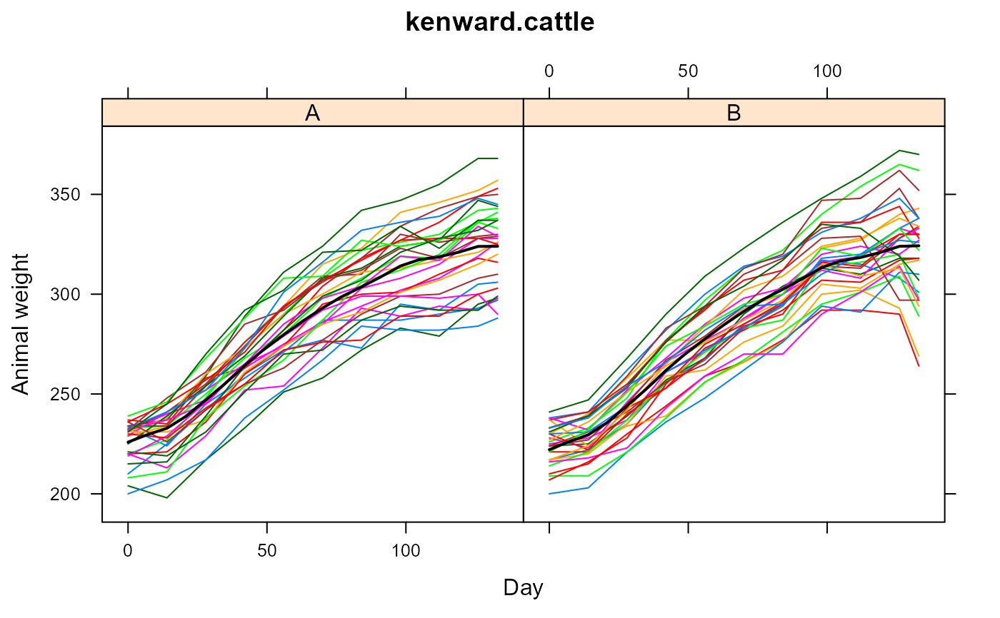

kenward.cattle.RdRepeated measurements of the weights of calves from a trial on the control of intestinal parasites.
data("kenward.cattle")
A data frame with 660 observations on the following 4 variables.
animalanimal factor
trttreatment factor, A or B
dayday, numberic, 0-133
weightbodyweight, kg
Grazing cattle can ingest larvae, which deprives the host animal of nutrients and weakens the immune system, affecting the growth of the animal.
Two treatments A and B were applied randomly to 60 animals (30 each in two groups) to control the disease.
Each animal was weighed 11 times at two-week intervals (one week between the final two measurements).
Is there a difference in treatments, and when does that difference first become manifest?
Kenward, Michael G. (1987). A Method for Comparing Profiles of Repeated Measurements. Applied Statistics, 36, 296-308. Table 1. https://doi.org/10.2307/2347788
W. Zhang, C. Leng and C. Y. Tang (2015). A joint modelling approach for longitudinal studies J. R. Statist. Soc. B, 77 (2015), 219--238. https://doi.org/10.1111/rssb.12065
# \dontrun{ library(agridat) data(kenward.cattle) dat <- kenward.cattle # Profile plots libs(lattice) foo1 <- xyplot(weight~day|trt, data=dat, type='l', group=animal, xlab="Day", ylab="Animal weight", main="kenward.cattle") print(foo1)# ---------- # lme4. Fixed treatment intercepts, treatment polynomial trend. # Random deviation for each animal libs(lme4) m1a <-lmer(weight ~ trt*poly(day, 4) + (1|animal), data=dat, REML = FALSE) # Change separate polynomials into common polynomial m1b <-lmer(weight ~ trt + poly(day, 4) + (1|animal), data=dat, REML = FALSE) # Drop treatment differences m1c <-lmer(weight ~ poly(day, 4) + (1|animal), data=dat, REML = FALSE) anova(m1a, m1b, m1c) # Significant differences between trt polynomials#> Data: dat #> Models: #> m1c: weight ~ poly(day, 4) + (1 | animal) #> m1b: weight ~ trt + poly(day, 4) + (1 | animal) #> m1a: weight ~ trt * poly(day, 4) + (1 | animal) #> npar AIC BIC logLik deviance Chisq Df Pr(>Chisq) #> m1c 7 4901.2 4932.6 -2443.6 4887.2 #> m1b 8 4903.0 4938.9 -2443.5 4887.0 0.2047 1 0.6509 #> m1a 12 4885.7 4939.6 -2430.9 4861.7 25.2640 4 4.452e-05 *** #> --- #> Signif. codes: 0 '***' 0.001 '**' 0.01 '*' 0.05 '.' 0.1 ' ' 1# Overlay polynomial predictions on plot libs(latticeExtra) dat$pred <- predict(m1a, re.form=NA) foo1 + xyplot(pred ~ day|trt, data=dat, lwd=2, col="black", type='l')# A Kenward-Roger Approximation and Parametric Bootstrap # libs(pbkrtest) # KRmodcomp(m1b, m1c) # Non-signif # Model comparison of nested models using parametric bootstrap methods # PBmodcomp(m1b, m1c, nsim=500) ## Parametric bootstrap test; time: 13.20 sec; samples: 500 extremes: 326; ## large : weight ~ trt + poly(day, 4) + (1 | animal) ## small : weight ~ poly(day, 4) + (1 | animal) ## stat df p.value ## LRT 0.2047 1 0.6509 ## PBtest 0.2047 0.6527 # ----------- # asreml3 & asreml4 # ASREML approach to model. Not final by any means. # Maybe a spline curve for each treatment, plus random deviations for each time libs(asreml) m1 <- asreml(weight ~ 1 + lin(day) + # overall line trt + trt:lin(day), # different line for each treatment data=dat, random = ~ spl(day) + # overall spline trt:spl(day) + # different spline for each treatment dev(day) + trt:dev(day) ) # non-spline deviation at each time*trt#> Model fitted using the gamma parameterization. #> ASReml 4.1.0 Mon Jan 11 17:08:49 2021 #> Spline: design points closer than 0.0133 have been merged. #> LogLik Sigma2 DF wall cpu #> 1 -2194.744 261.768 656 17:08:49 0.0 (3 restrained) #> 2 -2187.368 267.488 656 17:08:49 0.0 (2 restrained) #> 3 -2186.465 267.804 656 17:08:49 0.0 (2 restrained) #> 4 -2186.238 267.347 656 17:08:49 0.0 (2 restrained) #> 5 -2186.185 267.055 656 17:08:49 0.0 (2 restrained) #> 6 -2186.181 267.001 656 17:08:49 0.0#> Warning: Some components changed by more than 1% on the last iteration.#> Model fitted using the gamma parameterization. #> ASReml 4.1.0 Mon Jan 11 17:08:49 2021 #> Spline: design points closer than 0.0133 have been merged. #> LogLik Sigma2 DF wall cpu #> 1 -2186.181 266.996 656 17:08:49 0.0 #> 2 -2186.181 266.996 656 17:08:49 0.0 #> 3 -2186.181 266.996 656 17:08:49 0.0p1 <- p1$pvals foo2 <- xyplot(predicted.value ~ day|trt, p1, type='l', lwd=2, lty=1, col="black") libs(latticeExtra) print(foo1 + foo2)# Not much evidence for treatment differences # wald(m1) ## Df Sum of Sq Wald statistic Pr(Chisq) ## (Intercept) 1 37128459 139060 <2e-16 *** ## trt 1 455 2 0.1917 ## lin(day) 1 570798 2138 <2e-16 *** ## trt:lin(day) 1 283 1 0.3031 ## residual (MS) 267 # vc(m1) ## effect component std.error z.ratio constr ## spl(day) 25.29 24.09 1 pos ## dev(day) 1.902 4.923 0.39 pos ## trt:spl(day)!trt.var 0.00003 0.000002 18 bnd ## trt:dev(day)!trt.var 0.00003 0.000002 18 bnd ## R!variance 267 14.84 18 pos # }